♫
Bibliothèque intelligente
Importez, recherchez, classez et retrouvez rapidement vos sons, favoris et pages.

Soundboard MakerVos sons. Votre contrôle.
Organisez, éditez, enregistrez et déclenchez vos sons depuis une seule application Windows, avec intégration Stream Deck.
De vraies captures de Soundboard Maker. Cliquez pour agrandir et découvrir l’interface.
Du classement de votre bibliothèque aux actions Stream Deck, gardez le contrôle sur les sons que vous utilisez.
Importez, recherchez, classez et retrouvez rapidement vos sons, favoris et pages.
Découpez, préécoutez, modifiez et enregistrez des copies sans quitter le logiciel.
Enregistrez l’audio système et sauvegardez les dernières secondes grâce au Replay Buffer.
Déclenchez vos sons et contrôlez capture, mémoire, replay et arrêt depuis vos touches.
Pour les envoyer dans Discord ou le chat vocal d'un jeu comme entrée microphone, Wave Link est obligatoire dans la configuration prise en charge par Soundboard Maker. Configurez une sortie Wave Link puis sélectionnez son micro virtuel dans le chat vocal. Pour écouter vos sons au casque ou sur les enceintes, Wave Link n'est pas nécessaire.
Guide de configuration Wave LinkLa version 1.0 est en préparation. Les téléchargements seront disponibles après sa publication.
Un seul installateur .exe pour Soundboard Maker. Aucune version portable n’est prévue.
Téléchargez le fichier .streamDeckPlugin ici et installez-le manuellement jusqu’à sa publication sur Elgato Marketplace.
Partagez vos impressions, vos idées et vos questions sur GitHub Discussions. Pour signaler un problème précis, utilisez les Issues.
Non. Ce site et le dépôt public distribuent le logiciel et sa documentation ; le développement reste privé.
Non. La distribution prévue utilise un installateur Windows .exe.
Non pour les fonctions principales du logiciel. L’intégration aux touches demande le logiciel Elgato Stream Deck et notre plugin.
Oui pour router les sons vers le micro virtuel dans le fonctionnement pris en charge. Non pour une simple lecture sur une sortie audio Windows.